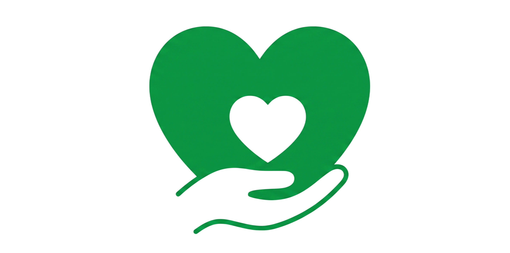

Acreditamos que a pobreza não se resolve apenas com doações. Embora o apoio imediato seja fundamental para quem precisa hoje, a verdadeira transformação acontece através do conhecimento. Por isso, nosso projeto une a solidariedade das doações à força da educação financeira, ajudando a construir um futuro com mais autonomia para todos. Por isso separamos alguns lugares para você estudar.